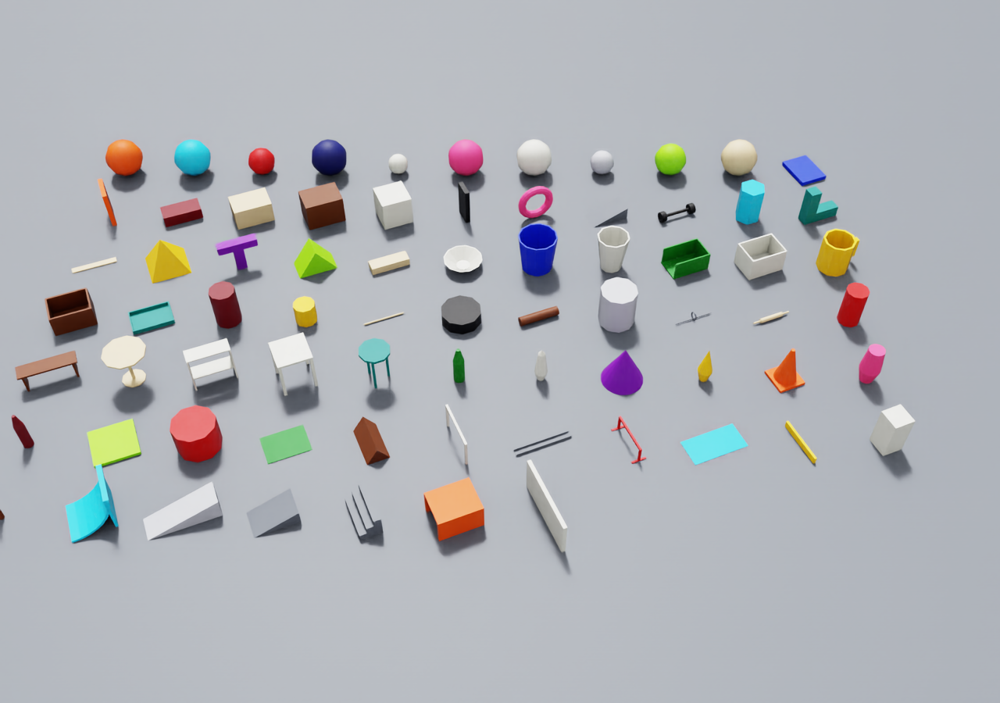
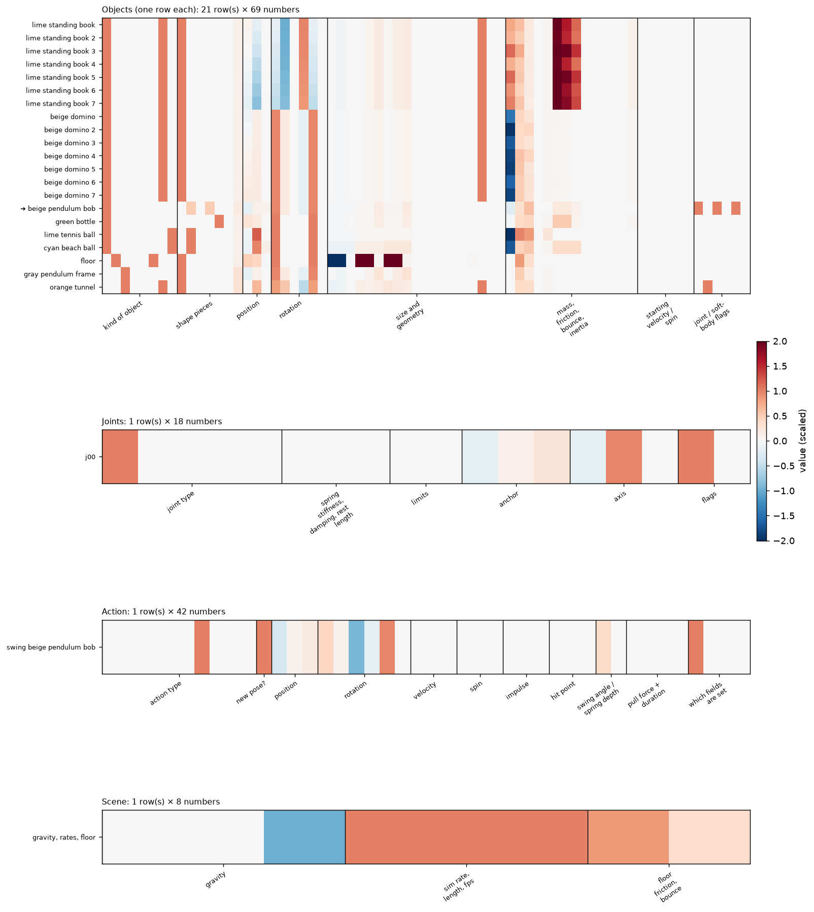

Every table says where its scenes, tasks, actions and next states come from (grey strip above the table). Terms used in the tables:
Scaled-up data from both code branches: simulated scenes, tasks and actions; open language models compared with GPT-5.4 at writing and checking tasks; learned simulators compared with the physics engine.
The end-to-end study ran at small scale. Here the pipelines of both lines of work are merged and run on close to a thousand simulated scenes from twelve families, including trials converted from the Kubric MOVi and Physion datasets, with over 300,000 PhysX rollouts. The questions: which open models can write tasks or review outcomes in place of GPT-5.4, and which state-predictor architecture, training objective and amount of data predicts motion best.
The ground truth throughout is a physics engine (PhysX, inside NVIDIA Isaac Sim 6.1). After an action, it simulates the scene for 3 seconds; we call one such simulation a rollout. Whether a task succeeded (its verdict) is decided by code that checks the simulated motion. The same code checks the motion predicted by a learned simulator, so every action gets two verdicts we can compare.
Every table says where its scenes, tasks, actions and next states come from (grey strip above the table). Terms used in the tables:
Scenes come from scene generators written in code, from scene descriptions written by GPT, from ReplicaCAD furnished rooms, and from the public MOVi and Physion datasets. Tasks come from fixed rule-based templates (or, for comparison, language models). Actions are chosen by code: random actions, searches around actions that almost worked, and what-if variations (the same action with one setting changed, or with one object removed). The physics engine then simulates every action. Last, who can write tasks and who can check them.
Each clip: a caption bar (which object is acted on and how, the task, whether the task succeeded), the scene before the action (held for 0.4 s), then the 3 s simulation by the physics engine.
Scenes: scene generators in code (9 families: playground, tabletop, room, mechanisms, dominoes, Physion-style, MOVi-style toss, Jenga); scene descriptions written by GPT (shravan branch); ReplicaCAD furnished rooms (mvp18 branch); scenes copied from the public MOVi-A / MOVi-B and Physion datasets (their starting positions and velocities)Tasks: rule-based templates (17 categories)Actions: chosen by code, no language model: random actions; searches around actions that almost worked; actions not tied to a task; actions aimed at hitting another object; what-if variations (one action setting changed, an object's mass, friction or bounciness changed, or an object removed)Next states: PhysX
Complete indoor rooms
The most furnished scenes in the data: rooms laid out with ReplicaCAD furniture (sofa, tables, chairs, shelves, TV, plants; mvp18 branch). Only 10 such rooms exist so far (4 test, 6 training); furnished versions of all scenes are planned.
complete room: 24 objects · drop yellow cup at (-0.01, 1.28, 1.14)
complete room: 25 objects · drop yellow cup at (0.67, 1.54, 0.77)
complete room: 27 objects · drop pink vase at (-0.43, 0.44, 0.91)
complete room: 24 objects · drop purple cup at (0.84, 1.07, 1.46)
By task category
One solved test task per category: the task, the action that solved it in PhysX, the 3 s rollout.
drop · very hard · drop black basketball at (-0.97, -0.30, 0.93)
slide · medium · push blue traffic cone 4.5 m/s
throw · medium · throw brown soda can 3.8 m/s
hit · easy · push lime tennis ball 1.9 m/s
rebound · easy · throw gray wooden block 8.0 m/s
chain · hard · throw orange die 5.7 m/s
topple · medium · strike black domino 9 0.3 N·s
ramp · hard · throw red billiard ball 2.4 m/s at (-0.33, 0.56, 0.33)
spin · medium · spin red rubber ball
avoid · medium · push maroon brick 3.3 m/s
place · easy · place yellow billiard ball at (-0.99, 1.16, 0.10)
composite · hard · push ball 4.5 m/s; push cylinder 4.0 m/s
pendulum · easy · swing beige pendulum bob at (-1.64, -0.68, 0.36)
spring · easy · compress silver hanging weight at (-0.65, -1.00, 0.06)
soft · easy · throw yellow rope 7.9 m/s
domino · medium · push yellow domino 4.2 m/s
jenga · easy · push blue dumbbell 3.9 m/s
New mechanisms and towers: success vs near miss
Pendulums, springs, soft bodies, domino chains and Jenga towers; the left clip of each pair solves the task, the right one is the closest failure.
pendulum: success · swing beige wrecking ball at (0.91, 1.40, 0.68)
pendulum: near miss (fails) · swing beige wrecking ball at (-0.02, 1.86, 0.16)
spring: success · compress cyan hanging weight at (1.30, -0.23, 0.08)
spring: near miss (fails) · compress cyan hanging weight at (1.30, -0.23, 0.14)
soft: success · throw gray rope 3.1 m/s
soft: near miss (fails) · throw gray rope 3.6 m/s
domino: success · push blue standing book 3.3 m/s
domino: near miss (fails) · push blue standing book 2.5 m/s
jenga: success · pull brown jenga block L4-1
jenga: near miss (fails) · pull brown jenga block L4-1
By action type
The ten action types: place, drop, throw, push, spin, strike (impulse), swing (pendulum), compress (spring), poke (soft body), pull (sustained force).
action: place · place red billiard ball at (-1.21, -0.67, 0.27)
action: drop · drop yellow skittle at (-0.62, -0.09, 1.23)
action: throw · throw cyan soda can 1.3 m/s
action: push · push teal wedge 4.6 m/s
action: spin · spin red rubber ball
action: strike · strike cylinder 0.2 N·s
action: swing · swing brown wrecking ball at (-0.16, -0.85, 0.67)
action: compress · compress red hanging weight at (0.77, -0.18, 0.12)
action: poke · poke blue rope 0.8 m/s
action: pull · pull beige brick L4-1
By difficulty
Difficulty = share of 24 random actions that solve the task (easy >= 20%, medium >= 8%, hard > 0%, very hard = only found by refinement).
easy · drop · drop teal wooden block at (-1.54, -0.66, 0.79)
medium · jenga · pull maroon jenga block L4-2
hard · pendulum · swing navy pendulum bob at (1.28, 1.44, 0.24)
very hard · composite · throw white lamp 3.1 m/s; push pink soccer ball 1.7 m/s
Complete vs sparse scenes
The most and least cluttered test scenes with a solved task.
complete scene: 58 objects · pull brown jenga block L9-1
complete scene: 54 objects · pull beige jenga block L5-3
complete scene: 54 objects · pull beige jenga block L6-3
sparse scene: 3 objects · place orange die at (-0.93, -0.79, 0.43)
sparse scene: 3 objects · push yellow bowling pin 2 5.0 m/s
Passive starts and external datasets
No action: the objects start moving (Physion pushes, MOVi tosses), re-simulated in Isaac from the datasets' start states.
Physion trial (collide), re-simulated · no action (objects start moving on their own)
Physion trial (dominoes), re-simulated · no action (objects start moving on their own)
Physion trial (support), re-simulated · no action (objects start moving on their own)
MOVi-A scene, re-simulated · no action (objects start moving on their own)
MOVi-B scene, re-simulated · no action (objects start moving on their own)
Physion-style drape (cloth) · no action (objects start moving on their own)
Physion-style link (chain) · no action (objects start moving on their own)
MOVi-style toss (ours) · no action (objects start moving on their own)
Counterfactual: the same action with one object removed
Training data includes the same action with an object taken out of the scene; the outcome changes.
original · throw lime soda can 3.5 m/s
same action, o05 removed · throw lime soda can 3.5 m/s
original · throw gray rope 3.1 m/s
same action, o03 removed · throw gray rope 3.1 m/s
original · drop cyan bucket at (-1.28, 2.62, 0.62)
same action, o03 removed · drop cyan bucket at (-1.28, 2.62, 0.62)
Twelve scene families. Most scenes start at rest and are kept only if doing nothing for 3 s leaves everything in place. Some start with objects already moving (Physion-style pushes, MOVi-style tosses, scenes copied from MOVi and Physion); there the motion itself is the event.

Scenes: scene generators in code (9 families: playground, tabletop, room, mechanisms, dominoes, Physion-style, MOVi-style toss, Jenga); scene descriptions written by GPT (shravan branch); ReplicaCAD furnished rooms (mvp18 branch); scenes copied from the public MOVi-A / MOVi-B and Physion datasets (their starting positions and velocities)Tasks: rule-based templates (17 categories)Actions: chosen by code, no language model: random actions; searches around actions that almost worked; actions not tied to a task; actions aimed at hitting another object; what-if variations (one action setting changed, an object's mass, friction or bounciness changed, or an object removed)Next states: PhysX
Who made the scenes (scenes that passed the physics check and are used)
| Made by | How | Test | Val | Train | Total |
|---|---|---|---|---|---|
| Claude (this project) | scene-generator code written by Claude: playground, tabletop, room, mechanisms, dominoes, Physion-style, MOVi-style toss, Jenga | 336 | 93 | 174 | 603 |
| GPT-5.4 | scene descriptions written by the model (shravan branch task-suite study) | 10 | 0 | 0 | 10 |
| Qwen3-VL-30B Thinking | scene descriptions written by the model (shravan branch task-suite study) | 10 | 0 | 0 | 10 |
| Qwen3-VL-30B Instruct | scene descriptions written by the model (shravan branch task-suite study) | 9 | 0 | 0 | 9 |
| People (shravan branch) | 5 hand-written seed scenes and their randomized variants | 0 | 10 | 78 | 88 |
| People, in code (mvp18 branch) | ReplicaCAD furnished rooms authored in code | 4 | 0 | 6 | 10 |
| Kubric MOVi-A generator (Google) | public dataset; start states copied and re-simulated | 30 | 9 | 37 | 76 |
| Kubric MOVi-B generator (Google) | public dataset; start states copied and re-simulated | 30 | 10 | 27 | 67 |
| Physion (TDW) | public dataset; start states copied and re-simulated | 51 | 18 | 34 | 103 |
| All | 480 | 140 | 356 | 976 |
Which model did what
| Model / agent | Role in this pipeline |
|---|---|
| Claude | wrote the scene generators, task templates, action samplers and all pipeline code; no per-scene decisions at run time |
| GPT-5.4 | wrote 10 test scenes; wrote tasks in the writer study (1.4); reviewer (1.5); planner (Part 3) |
| Qwen3-VL-30B (Instruct / Thinking) | wrote 19 test scenes; wrote tasks in the writer study (Instruct); reviewers (1.5); planner (Instruct, Part 3) |
| Qwen3.8-27B | reviewer (1.5) and planner (Part 3); made no scenes or tasks |
| Qwen3.6-35B, Gemma-4-31B | reviewers (1.5) only |
| Code, no model | every action in the training and test data (random, searched, what-if variations); every success verdict |
Scenes and simulations by scene family
| Scene source | Test | Val | Train |
|---|---|---|---|
| Jenga / block towers | 37 | 9 | 25 |
| MOVi-A (converted) | 30 | 9 | 37 |
| MOVi-B (converted) | 30 | 10 | 27 |
| MOVi-style toss | 13 | 5 | 20 |
| Physion scenarios | 70 | 19 | 65 |
| Physion trials (converted) | 42 | 15 | 26 |
| dominoes | 53 | 15 | 30 |
| mechanisms (pendulum / spring / soft) | 63 | 22 | 20 |
| playground | 45 | 12 | 5 |
| room | 41 | 12 | 32 |
| shravan LLM/randomized | 29 | 8 | 64 |
| tabletop | 27 | 4 | 5 |
| objects / movable per scene | 12.8 / 10.2 | 12.1 / 9.8 | 9.7 / 7.6 |
| PhysX rollouts (valid) | 143,416 (128,789) | 57,802 (50,782) | 150,524 (133,931) |
PhysX screen: a rollout is used only if the solver stayed sane: no deep interpenetration, no energy gain, nothing leaves the world. · Passive start: a scene that starts with objects already moving (Physion pushes, MOVi tosses) instead of at rest. · Rollout: one 3 s simulation of a scene after an action, recorded at 30 frames per second (positions, rotations, velocities, contacts).
Rule-based templates write tasks on the test scenes; the physics engine keeps a task only if doing nothing fails and at least one tried action succeeds.
Scenes: held-out test scenes (all families above)Tasks: rule-based templatesActions: 24 random actions, then a search around the ones that almost workedNext states: PhysX
Task: an instruction plus machine-checkable success conditions (e.g. 'the ball ends inside the bin and never touches the vase'). · Checks / verdict: the task's conditions evaluated on a trajectory by code (no LLM); verdict = success or failure. · Difficulty: share of 24 random actions that succeed in PhysX: easy >= 20%, medium >= 8%, hard > 0%, very hard = only found by refining near misses.
Test tasks kept, by category; difficulty = success rate of 24 random actions (easy ≥ 20%, medium ≥ 8%, hard > 0, very hard = only found by refinement). Not counted: 76 trivial (solved by doing nothing), 1842 unsolved.
Each writer gets the same test scenes as a structured list of objects (names, positions, sizes, materials) and writes one task per category. The physics engine then keeps a task only if doing nothing fails and at least one of the tried actions succeeds, exactly as for the template tasks.
Scenes: the same held-out test scenes for every writerTasks: GPT-5.4, Qwen3-VL-30B, or the templates (reference)Actions: random actions, then a search around the ones that almost workedNext states: PhysX
| Writer | Tasks | Valid | Non-trivial | Solvable | Easy / med / hard / v.hard | Categories |
|---|---|---|---|---|---|---|
| GPT-5.4 | 283 | 88% | 88% | 36% | 50 / 24 / 11 / 16 | 16 |
| Qwen3-VL-30B Instruct | 342 | 49% | 49% | 10% | 12 / 4 / 12 / 5 | 13 |
| Templates (ours) | 189 | 100% | 97% | 47% | 32 / 34 / 16 / 6 | 13 |
Valid: the written task parses, names real objects and uses allowed predicates and action types. · Non-trivial: doing nothing does not already satisfy the task. · Solvable: at least one of the tried actions succeeds in PhysX. · Difficulty: share of 24 random actions that succeed in PhysX: easy >= 20%, medium >= 8%, hard > 0%, very hard = only found by refining near misses.
Each reviewer sees 2 successful and 2 failed PhysX rollouts per test task (object states at 0/1/2/3 s, contact times, simulator definitions; images before/1 s/3 s where stated). Reference: PhysX + the task's checks.
Scenes: held-out test scenesTasks: rule-based templatesActions: random and searched actions: 2 that succeed and 2 that fail in the physics engine, per taskNext states: PhysX; the LLM reviewer judges success from them
| Task writer \ reviewer | GPT-5.4 | Gemma-4-31B | Qwen3-VL-30B Instruct | Qwen3-VL-30B Thinking | Qwen3.6-35B-A3B | Qwen3.8-27B |
|---|---|---|---|---|---|---|
| Templates (ours) | 91% κ 0.82 · n 1520 | 86% κ 0.72 · n 1520 | 78% κ 0.54 · n 1519 | 57% κ 0.06 · n 1484 | 80% κ 0.59 · n 1511 | 80% κ 0.59 · n 1519 |
| Reviewer | Evidence | Agreement | κ | Wrong "success" / wrong "fail" | Median latency |
|---|---|---|---|---|---|
| GPT-5.4 | states | 91% | 0.82 | 11 / 124 | 8.9 s |
| GPT-5.4 | images + states | 92% | 0.84 | 11 / 111 | 8.9 s |
| GPT-5.4 | images | 82% | 0.64 | 64 / 204 | 8.9 s |
| Gemma-4-31B | states | 86% | 0.72 | 26 / 181 | 14.3 s |
| Gemma-4-31B | images + states | 88% | 0.75 | 31 / 154 | 14.3 s |
| Gemma-4-31B | images | 73% | 0.43 | 92 / 322 | 14.3 s |
| Qwen3-VL-30B Instruct | states | 78% | 0.54 | 73 / 268 | 4.2 s |
| Qwen3-VL-30B Instruct | images + states | 80% | 0.59 | 98 / 207 | 4.2 s |
| Qwen3-VL-30B Instruct | images | 62% | 0.21 | 184 / 392 | 4.2 s |
| Qwen3-VL-30B Thinking | states | 57% | 0.06 | 0 / 633 | 8.2 s |
| Qwen3-VL-30B Thinking | images + states | 66% | 0.25 | 4 / 506 | 8.2 s |
| Qwen3-VL-30B Thinking | images | 59% | 0.11 | 24 / 587 | 8.2 s |
| Qwen3.6-35B-A3B | states | 80% | 0.59 | 54 / 248 | 4.1 s |
| Qwen3.8-27B | states | 80% | 0.59 | 140 / 167 | 10.4 s |
| Qwen3.8-27B | images + states | 81% | 0.60 | 35 / 258 | 10.4 s |
| Qwen3.8-27B | images | 65% | 0.24 | 19 / 517 | 10.4 s |
Agreement with the physics engine, by task category (evidence: object positions and contacts)
| Group | GPT-5.4 | Gemma-4-31B | Qwen3-VL-30B Instruct | Qwen3-VL-30B Thinking | Qwen3.6-35B-A3B | Qwen3.8-27B |
|---|---|---|---|---|---|---|
| drop | 98%n 110 | 94%n 110 | 88%n 110 | 57%n 110 | 94%n 110 | 93%n 110 |
| slide | 97%n 106 | 72%n 106 | 63%n 106 | 58%n 106 | 64%n 106 | 61%n 106 |
| throw | 74%n 104 | 67%n 104 | 63%n 104 | 58%n 104 | 67%n 104 | 59%n 104 |
| hit | 100%n 108 | 95%n 108 | 92%n 108 | 58%n 98 | 89%n 107 | 87%n 108 |
| rebound | 94%n 18 | 72%n 18 | 50%n 18 | 56%n 18 | 72%n 18 | 67%n 18 |
| chain | 100%n 30 | 97%n 30 | 87%n 30 | 60%n 30 | 87%n 30 | 90%n 30 |
| topple | 99%n 105 | 97%n 105 | 91%n 105 | 76%n 105 | 93%n 105 | 93%n 105 |
| ramp | 72%n 96 | 94%n 96 | 74%n 96 | 54%n 96 | 78%n 96 | 83%n 96 |
| spin | 93%n 107 | 76%n 107 | 64%n 107 | 56%n 107 | 65%n 107 | 64%n 107 |
| avoid | 97%n 107 | 78%n 107 | 68%n 107 | 56%n 107 | 66%n 107 | 72%n 107 |
| place | 88%n 110 | 90%n 110 | 73%n 110 | 55%n 110 | 85%n 110 | 89%n 110 |
| composite | 100%n 109 | 100%n 109 | 93%n 109 | 58%n 102 | 94%n 109 | 98%n 109 |
| pendulum | 90%n 118 | 91%n 118 | 76%n 118 | 51%n 118 | 86%n 118 | 61%n 118 |
| spring | 63%n 68 | 63%n 68 | 62%n 68 | 50%n 68 | 65%n 68 | 65%n 68 |
| soft | 98%n 56 | 95%n 56 | 91%n 56 | 54%n 56 | 88%n 56 | 93%n 56 |
| domino | 94%n 110 | 94%n 110 | 94%n 110 | 59%n 107 | 89%n 110 | 99%n 110 |
| jenga | 91%n 58 | 84%n 58 | 68%n 57 | 55%n 42 | 62%n 50 | 81%n 57 |
Agreement with the physics engine, by task difficulty
| Group | GPT-5.4 | Gemma-4-31B | Qwen3-VL-30B Instruct | Qwen3-VL-30B Thinking | Qwen3.6-35B-A3B | Qwen3.8-27B |
|---|---|---|---|---|---|---|
| easy | 89%n 608 | 87%n 608 | 77%n 607 | 53%n 588 | 82%n 603 | 79%n 607 |
| medium | 92%n 390 | 87%n 390 | 76%n 390 | 53%n 381 | 78%n 388 | 80%n 390 |
| hard | 94%n 315 | 88%n 315 | 82%n 315 | 69%n 308 | 83%n 313 | 84%n 315 |
| very hard | 91%n 207 | 82%n 207 | 77%n 207 | 59%n 207 | 73%n 207 | 74%n 207 |
Agreement: share of rollouts where the two verdicts (reviewer or predictor vs PhysX checks) match. · Agreement beyond chance (κ): how often two judges give the same verdict, corrected for agreeing by luck: 0 = no better than chance, 1 = always agree. · Wrong success / wrong fail: verdicts that call a PhysX failure a success / a PhysX success a failure.
Stage 1 trains neural networks that predict how every object moves for the next 3 seconds after an action, without running the physics engine (learned simulators, also called state predictors). They are trained on the physics engine's simulations of the actions in Part 1 (so far chosen by code; actions proposed by the language-model planners of Part 3 are stored and can be added). First what such a model is given, then what its predictions look like next to the real simulation, then how accurate they are for each kind of task, action and scene, then how the models were chosen.
A learned simulator gets the scene as a table: one row per object, one per joint, one per action and one for the whole scene. No images: only these numbers.
The scene as a table (test scene, one row per object; ➜ = the object the action is applied to)
| Object | Moves? | Shape | Position (m) | Size (m) | Mass (kg) | Friction | Bounciness | Starting velocity (m/s) | |
|---|---|---|---|---|---|---|---|---|---|
| lime standing book | yes | 1 piece(s): box | [-0.81, -1.2, 0.0] | [0.04, 0.28, 0.36] | 2.16 | 0.59 | 0.21 | [0.0, 0.0, 0.0] | |
| lime standing book 2 | yes | 1 piece(s): box | [-0.87, -1.43, 0.0] | [0.04, 0.28, 0.36] | 2.00 | 0.51 | 0.18 | [0.0, 0.0, 0.0] | |
| lime standing book 3 | yes | 1 piece(s): box | [-0.93, -1.66, 0.0] | [0.04, 0.28, 0.36] | 3.11 | 0.75 | 0.16 | [0.0, 0.0, 0.0] | |
| lime standing book 4 | yes | 1 piece(s): box | [-1.01, -1.88, 0.0] | [0.04, 0.28, 0.36] | 2.06 | 0.53 | 0.18 | [0.0, 0.0, 0.0] | |
| lime standing book 5 | yes | 1 piece(s): box | [-1.11, -2.1, 0.0] | [0.04, 0.28, 0.36] | 3.08 | 0.54 | 0.16 | [0.0, 0.0, 0.0] | |
| lime standing book 6 | yes | 1 piece(s): box | [-1.21, -2.31, 0.0] | [0.04, 0.28, 0.36] | 2.49 | 0.46 | 0.18 | [0.0, 0.0, 0.0] | |
| lime standing book 7 | yes | 1 piece(s): box | [-1.33, -2.52, 0.0] | [0.04, 0.28, 0.36] | 2.73 | 0.56 | 0.14 | [0.0, 0.0, 0.0] | |
| beige domino | yes | 1 piece(s): box | [-1.08, -0.57, 0.0] | [0.02, 0.08, 0.15] | 0.23 | 0.43 | 0.27 | [0.0, 0.0, 0.0] | |
| beige domino 2 | yes | 1 piece(s): box | [-0.99, -0.55, 0.0] | [0.02, 0.08, 0.15] | 0.14 | 0.41 | 0.41 | [0.0, 0.0, 0.0] | |
| beige domino 3 | yes | 1 piece(s): box | [-0.91, -0.53, 0.0] | [0.02, 0.08, 0.15] | 0.19 | 0.39 | 0.27 | [0.0, 0.0, 0.0] | |
| beige domino 4 | yes | 1 piece(s): box | [-0.82, -0.51, 0.0] | [0.02, 0.08, 0.15] | 0.16 | 0.59 | 0.42 | [0.0, 0.0, 0.0] | |
| beige domino 5 | yes | 1 piece(s): box | [-0.73, -0.5, 0.0] | [0.02, 0.08, 0.15] | 0.15 | 0.55 | 0.26 | [0.0, 0.0, 0.0] | |
| beige domino 6 | yes | 1 piece(s): box | [-0.64, -0.48, 0.0] | [0.02, 0.08, 0.15] | 0.20 | 0.49 | 0.30 | [0.0, 0.0, 0.0] | |
| beige domino 7 | yes | 1 piece(s): box | [-0.55, -0.46, 0.0] | [0.02, 0.08, 0.15] | 0.16 | 0.52 | 0.29 | [0.0, 0.0, 0.0] | |
| ➜ | beige pendulum bob | yes | 2 piece(s): capsule, sphere | [-1.33, -0.61, 0.16] | [0.11, 0.11, 0.38] | 0.78 | 0.32 | 0.60 | [0.0, 0.0, 0.0] |
| green bottle | yes | 1 piece(s): convex | [-0.36, -0.42, 0.0] | [0.08, 0.08, 0.29] | 0.98 | 0.40 | 0.42 | [0.0, 0.0, 0.0] | |
| lime tennis ball | yes | 1 piece(s): sphere | [-1.1, 1.59, 0.04] | [0.08, 0.08, 0.08] | 0.13 | 0.99 | 0.86 | [0.0, 0.0, 0.0] | |
| cyan beach ball | yes | 1 piece(s): sphere | [-1.17, 1.15, 0.23] | [0.45, 0.45, 0.45] | 0.18 | 0.46 | 0.54 | [0.0, 0.0, 0.0] | |
| floor | no (fixed) | 1 piece(s): box | [0.0, 0.0, -0.05] | [40.0, 40.0, 0.1] | – | 0.86 | 0.35 | [0.0, 0.0, 0.0] | |
| gray pendulum frame | no (fixed) | 3 piece(s): box | [-1.33, -0.61, 0.0] | [0.04, 0.34, 0.55] | – | 0.50 | 0.20 | [0.0, 0.0, 0.0] | |
| orange tunnel | no (fixed) | 3 piece(s): box | [-0.95, 0.48, 0.0] | [0.48, 0.39, 0.3] | – | 0.40 | 0.37 | [0.0, 0.0, 0.0] |
Joints (one row each)
| Joint | Type | Connects | Spring stiffness |
|---|---|---|---|
| j00 | revolute | the world → o15 | – |
The action
| Type | Object | As the planner writes it | As the physics engine runs it |
|---|---|---|---|
| swing | beige pendulum bob | angle_deg 65.00084408546715 | amount 1.134, new position [-1.64, -0.68, 0.36], bodies moved 1 |

What it predicts: for every moving object and each of the 90 frames: change in position (3), rotation (6), velocity (3), spin (3); plus, frame by frame, which objects touch which. Up to 64 objects (48 moving) per scene.
Is the planner's action space the same as the one in the learned simulator's input?
Yes, the same actions in two forms. The planner writes an action in a readable form (for example "throw the ball with velocity (2, 0, 3) m/s"). Code turns it, without any model, into the exact action the physics engine runs, and the same exact action is encoded as the 42-number action row the learned simulator gets. For a given task the planner may only use that task's allowed action types and limits (e.g. start from where the object rests; throws up to 8 m/s, pushes up to 5 m/s, spins up to 30 rad/s); the learned simulator was trained on all ten types.
| Action type | The planner writes | The physics engine runs | The learned simulator gets (action row) |
|---|---|---|---|
| place | position, heading (yaw) | object moved to that pose, at rest | type, new pose (position, rotation) |
| drop | position above the scene | object released at rest from there | type, new pose |
| throw | velocity (and optional spin), from where it rests | velocity (and spin) set | type, velocity, spin |
| push | horizontal velocity | velocity set, vertical part 0 | type, velocity |
| spin | spin (rad/s) | spin set | type, spin |
| strike | impulse (N·s) and where it hits | impulse applied at that point | type, impulse (as velocity change), hit point |
| swing | angle (pendulum) | bob moved along its arc to that angle, released | type, new pose of the bob, swing angle |
| compress | depth (spring) | plunger pushed in by that depth, released | type, new pose of the plunger, spring depth |
| poke | which node and velocity (soft body) | velocities of that node and its neighbours | type, velocity, which bodies are moved |
| pull | force, duration, where (Jenga block) | force applied for that duration (stops once the block is out) | type, pull force (per kg) and duration |
Top left: the physics engine (ground truth). The other panels show each learned simulator's prediction for the same action from the same starting scene (test scenes, never used for training). * pretrained = first trained on clips from the public MOVi and Physion datasets, then on our data.
Scenes: held-out test scenesTasks: rule-based templatesActions: the stored test simulations (the same actions for the physics engine and the learned simulator)Next states: the learned simulator and the physics engine, side by side
drop · very hard · drop black basketball at (-0.97, -0.30, 0.93)
slide · medium · push blue traffic cone 4.5 m/s
throw · medium · throw brown soda can 3.8 m/s
hit · easy · push lime tennis ball 1.9 m/s
chain · hard · throw orange die 5.7 m/s
topple · medium · strike black domino 9 0.3 N·s
ramp · hard · throw red billiard ball 2.4 m/s at (-0.33, 0.56, 0.33)
pendulum · easy · swing beige pendulum bob at (-1.64, -0.68, 0.36)
spring · easy · compress silver hanging weight at (-0.65, -1.00, 0.06)
soft · easy · throw yellow rope 7.9 m/s
domino · medium · push yellow domino 4.2 m/s
jenga · easy · push blue dumbbell 3.9 m/s
complete scene: 58 objects · pull brown jenga block L9-1
Physion trial (collide), re-simulated · no action (objects start moving on their own)
MOVi-A scene, re-simulated · no action (objects start moving on their own)
complete room: 27 objects · drop pink vase at (-0.43, 0.44, 0.91)
Every simulation stored for the test scenes (successful and failed actions), predicted by each learned simulator from the same start and the same action. Lower position error is better; κ = 1 means the predicted motion always gives the same task verdict as the physics engine.
Scenes: held-out test scenesTasks: rule-based templatesActions: the stored test simulations (the same actions for the physics engine and the learned simulator)Next states: the learned simulator and the physics engine, side by side
All 118,883 test simulations together
| Learned simulator | Avg. position error (m) | Final position error (m) | Contact score (F1) | Same task verdict as the physics engine | Agreement beyond chance (κ) |
|---|---|---|---|---|---|
| Regression | 0.61 | 0.95 | 0.53 | 72% | 0.23 |
| JEPA | 0.58 | 0.90 | 0.51 | 72% | 0.26 |
| Flow matching (noise level picked evenly) | 0.75 | 1.18 | 0.36 | 71% | 0.23 |
| Flow matching (favouring medium noise) | 0.82 | 1.32 | 0.30 | 70% | 0.20 |
| Diffusion forcing | 1.34 | 1.93 | 0.27 | 68% | 0.17 |
| Regression, pretrained on MOVi + Physion | 0.49 | 0.76 | 0.56 | 73% | 0.28 |
| Flow, pretrained on MOVi + Physion | 0.63 | 0.99 | 0.47 | 72% | 0.26 |
| Regression, MOVi + Physion only | 1.58 | 2.18 | 0.12 | 67% | 0.10 |
By task category
| Task category | Rollouts | Regression | JEPA | Flow matching (noise level picked evenly) | Flow matching (favouring medium noise) | Diffusion forcing | Regression, pretrained on MOVi + Physion | Flow, pretrained on MOVi + Physion | Regression, MOVi + Physion only |
|---|---|---|---|---|---|---|---|---|---|
| slide | 1,105 | 0.70κ 0.02 | 0.71κ 0.24 | 0.80κ 0.30 | 0.84κ 0.23 | 0.97κ 0.15 | 0.56κ 0.09 | 0.71κ 0.36 | 1.34κ 0.00 |
| drop | 1,085 | 0.36κ 0.11 | 0.32κ 0.14 | 0.48κ 0.04 | 0.57κ -0.03 | 1.88κ 0.00 | 0.23κ 0.26 | 0.36κ 0.12 | 1.78κ -0.00 |
| avoid | 1,049 | 0.67κ 0.42 | 0.61κ 0.55 | 0.82κ 0.33 | 0.95κ 0.22 | 1.37κ 0.11 | 0.53κ 0.30 | 0.72κ 0.29 | 1.76κ 0.00 |
| hit | 1,007 | 0.69κ 0.07 | 0.64κ 0.05 | 0.83κ -0.00 | 0.91κ 0.08 | 1.39κ -0.02 | 0.56κ 0.12 | 0.72κ 0.10 | 1.78κ 0.03 |
| throw | 986 | 0.79κ 0.30 | 0.78κ 0.31 | 0.97κ 0.32 | 1.03κ 0.33 | 1.54κ 0.14 | 0.57κ 0.30 | 0.80κ 0.40 | 2.05κ 0.00 |
| composite | 983 | 0.77κ 0.09 | 0.75κ 0.01 | 1.01κ 0.07 | 1.11κ 0.06 | 1.49κ -0.01 | 0.68κ 0.15 | 0.90κ 0.10 | 1.82κ 0.03 |
| place | 936 | 0.31κ 0.01 | 0.27κ 0.04 | 0.43κ 0.04 | 0.47κ 0.01 | 1.78κ 0.00 | 0.23κ 0.01 | 0.34κ 0.08 | 1.68κ 0.00 |
| ramp | 818 | 1.00κ 0.01 | 1.04κ 0.03 | 1.13κ 0.03 | 1.24κ 0.08 | 1.57κ 0.05 | 1.02κ 0.12 | 1.01κ 0.09 | 1.39κ -0.14 |
| topple | 807 | 0.47κ 0.45 | 0.42κ 0.35 | 0.56κ 0.32 | 0.56κ 0.32 | 0.98κ 0.16 | 0.39κ 0.47 | 0.50κ 0.38 | 1.37κ -0.01 |
| pendulum | 734 | 0.22κ 0.57 | 0.21κ 0.50 | 0.25κ 0.32 | 0.22κ 0.38 | 0.31κ 0.25 | 0.20κ 0.53 | 0.23κ 0.35 | 0.62κ 0.35 |
| domino | 714 | 0.31κ 0.44 | 0.27κ 0.51 | 0.42κ 0.27 | 0.45κ 0.22 | 0.59κ 0.07 | 0.23κ 0.48 | 0.35κ 0.38 | 0.83κ -0.06 |
| spin | 646 | 0.34κ -0.02 | 0.35κ -0.01 | 0.41κ 0.05 | 0.40κ 0.03 | 0.62κ -0.01 | 0.31κ -0.01 | 0.34κ 0.01 | 0.51κ 0.00 |
| jenga | 645 | 0.61κ -0.11 | 0.54κ -0.07 | 0.83κ 0.09 | 1.11κ -0.02 | 1.72κ -0.05 | 0.43κ 0.01 | 0.71κ 0.09 | 1.87κ -0.12 |
| spring | 469 | 0.12κ 0.03 | 0.11κ 0.10 | 0.17κ 0.05 | 0.12κ 0.04 | 0.37κ 0.19 | 0.15κ 0.08 | 0.19κ 0.00 | 0.62κ 0.06 |
| soft | 461 | 0.68κ 0.09 | 0.64κ 0.26 | 0.88κ 0.06 | 1.12κ 0.16 | 1.51κ 0.09 | 0.53κ 0.07 | 0.80κ 0.31 | 1.95κ -0.07 |
| chain | 271 | 0.61κ 0.00 | 0.58κ 0.01 | 0.79κ 0.04 | 1.01κ -0.03 | 1.50κ -0.13 | 0.53κ 0.07 | 0.72κ 0.17 | 1.86κ 0.19 |
| rebound | 166 | 1.46κ 0.00 | 1.52κ 0.00 | 1.50κ 0.00 | 1.58κ -0.01 | 1.42κ 0.00 | 1.27κ -0.01 | 1.63κ 0.00 | 1.54κ 0.00 |
Average position error of moving objects (m). For task categories and difficulty, κ: does the predicted motion give the same task verdict as the physics engine (1 = always).
By action type
| Action type | Rollouts | Regression | JEPA | Flow matching (noise level picked evenly) | Flow matching (favouring medium noise) | Diffusion forcing | Regression, pretrained on MOVi + Physion | Flow, pretrained on MOVi + Physion | Regression, MOVi + Physion only |
|---|---|---|---|---|---|---|---|---|---|
| push | 43,235 | 0.60 | 0.57 | 0.73 | 0.76 | 1.06 | 0.47 | 0.59 | 1.35 |
| throw | 37,035 | 0.84 | 0.81 | 1.05 | 1.21 | 1.74 | 0.68 | 0.89 | 2.19 |
| drop | 12,418 | 0.36 | 0.37 | 0.51 | 0.56 | 1.74 | 0.31 | 0.42 | 1.66 |
| place | 9,758 | 0.29 | 0.28 | 0.41 | 0.44 | 1.56 | 0.24 | 0.33 | 1.44 |
| spin | 6,700 | 0.52 | 0.52 | 0.52 | 0.54 | 0.74 | 0.46 | 0.47 | 0.69 |
| strike | 3,044 | 0.53 | 0.54 | 0.65 | 0.67 | 0.93 | 0.46 | 0.61 | 0.87 |
| compress | 2,413 | 0.34 | 0.34 | 0.38 | 0.34 | 0.49 | 0.36 | 0.38 | 0.71 |
| swing | 2,026 | 0.24 | 0.22 | 0.27 | 0.24 | 0.34 | 0.21 | 0.24 | 0.63 |
| pull | 1,319 | 0.58 | 0.53 | 0.75 | 1.02 | 1.57 | 0.46 | 0.67 | 1.66 |
| poke | 801 | 0.08 | 0.07 | 0.09 | 0.07 | 0.16 | 0.07 | 0.08 | 0.51 |
| none (passive start) | 134 | 1.51 | 1.48 | 1.31 | 1.45 | 1.57 | 1.54 | 1.28 | 1.11 |
Average position error of moving objects (m). For task categories and difficulty, κ: does the predicted motion give the same task verdict as the physics engine (1 = always).
By difficulty
| Difficulty | Rollouts | Regression | JEPA | Flow matching (noise level picked evenly) | Flow matching (favouring medium noise) | Diffusion forcing | Regression, pretrained on MOVi + Physion | Flow, pretrained on MOVi + Physion | Regression, MOVi + Physion only |
|---|---|---|---|---|---|---|---|---|---|
| easy | 4,252 | 0.51κ 0.21 | 0.49κ 0.23 | 0.63κ 0.19 | 0.71κ 0.17 | 1.14κ 0.13 | 0.43κ 0.25 | 0.56κ 0.22 | 1.31κ 0.08 |
| hard | 3,060 | 0.64κ 0.18 | 0.61κ 0.14 | 0.80κ 0.15 | 0.89κ 0.13 | 1.38κ 0.07 | 0.51κ 0.18 | 0.70κ 0.20 | 1.64κ 0.05 |
| medium | 2,990 | 0.54κ 0.15 | 0.51κ 0.21 | 0.66κ 0.14 | 0.74κ 0.09 | 1.27κ 0.08 | 0.44κ 0.20 | 0.57κ 0.18 | 1.50κ 0.03 |
| very hard | 2,573 | 0.63κ 0.03 | 0.61κ 0.05 | 0.75κ 0.05 | 0.81κ 0.02 | 1.35κ 0.02 | 0.51κ 0.06 | 0.66κ 0.03 | 1.60κ -0.03 |
Average position error of moving objects (m). For task categories and difficulty, κ: does the predicted motion give the same task verdict as the physics engine (1 = always).
By scene size
| Scene size | Rollouts | Regression | JEPA | Flow matching (noise level picked evenly) | Flow matching (favouring medium noise) | Diffusion forcing | Regression, pretrained on MOVi + Physion | Flow, pretrained on MOVi + Physion | Regression, MOVi + Physion only |
|---|---|---|---|---|---|---|---|---|---|
| 1-8 objects | 47,200 | 0.68 | 0.68 | 0.83 | 0.91 | 1.44 | 0.57 | 0.70 | 1.63 |
| 17-32 objects | 35,609 | 0.54 | 0.51 | 0.69 | 0.77 | 1.27 | 0.44 | 0.57 | 1.55 |
| 9-16 objects | 32,814 | 0.57 | 0.54 | 0.69 | 0.75 | 1.25 | 0.44 | 0.58 | 1.51 |
| 33+ objects | 3,260 | 0.57 | 0.53 | 0.74 | 0.86 | 1.46 | 0.46 | 0.65 | 1.71 |
Average position error of moving objects (m). For task categories and difficulty, κ: does the predicted motion give the same task verdict as the physics engine (1 = always).
By scene completeness
| Scene completeness | Rollouts | Regression | JEPA | Flow matching (noise level picked evenly) | Flow matching (favouring medium noise) | Diffusion forcing | Regression, pretrained on MOVi + Physion | Flow, pretrained on MOVi + Physion | Regression, MOVi + Physion only |
|---|---|---|---|---|---|---|---|---|---|
| other scene | 103,479 | 0.60 | 0.58 | 0.73 | 0.81 | 1.33 | 0.48 | 0.61 | 1.58 |
| complete room | 15,404 | 0.66 | 0.65 | 0.83 | 0.87 | 1.38 | 0.58 | 0.75 | 1.56 |
Average position error of moving objects (m). For task categories and difficulty, κ: does the predicted motion give the same task verdict as the physics engine (1 = always).
By scene family
| Scene family | Rollouts | Regression | JEPA | Flow matching (noise level picked evenly) | Flow matching (favouring medium noise) | Diffusion forcing | Regression, pretrained on MOVi + Physion | Flow, pretrained on MOVi + Physion | Regression, MOVi + Physion only |
|---|---|---|---|---|---|---|---|---|---|
| mechanisms | 23,882 | 0.48 | 0.43 | 0.59 | 0.66 | 1.18 | 0.37 | 0.50 | 1.52 |
| Physion-style | 23,114 | 0.44 | 0.42 | 0.58 | 0.67 | 1.21 | 0.32 | 0.45 | 1.47 |
| room (procedural) | 14,400 | 0.66 | 0.65 | 0.83 | 0.87 | 1.37 | 0.59 | 0.76 | 1.54 |
| playground | 11,697 | 0.68 | 0.65 | 0.84 | 0.92 | 1.50 | 0.52 | 0.65 | 1.78 |
| GPT-written spec | 11,032 | 0.70 | 0.71 | 0.83 | 0.87 | 1.31 | 0.59 | 0.73 | 1.48 |
| dominoes / mechanisms | 10,024 | 0.57 | 0.51 | 0.74 | 0.85 | 1.36 | 0.42 | 0.56 | 1.64 |
| tabletop | 9,123 | 0.66 | 0.66 | 0.89 | 0.96 | 1.69 | 0.53 | 0.77 | 1.89 |
| Physion trial (converted) | 6,205 | 1.29 | 1.30 | 1.34 | 1.40 | 1.68 | 1.22 | 1.25 | 1.74 |
| Jenga / towers | 4,788 | 0.54 | 0.51 | 0.71 | 0.90 | 1.36 | 0.40 | 0.56 | 1.61 |
| MOVi-style toss | 3,562 | 0.61 | 0.67 | 0.54 | 0.58 | 1.03 | 0.60 | 0.49 | 1.07 |
| room (ReplicaCAD) | 1,004 | 0.60 | 0.55 | 0.85 | 0.94 | 1.57 | 0.44 | 0.72 | 1.78 |
| MOVi-B (converted) | 29 | 2.84 | 2.74 | 2.37 | 2.65 | 2.62 | 3.08 | 2.36 | 1.36 |
| MOVi-A (converted) | 23 | 2.53 | 2.40 | 2.14 | 2.18 | 2.36 | 2.72 | 2.21 | 1.20 |
Average position error of moving objects (m). For task categories and difficulty, κ: does the predicted motion give the same task verdict as the physics engine (1 = always).
By rollout type
| Rollout type | Rollouts | Regression | JEPA | Flow matching (noise level picked evenly) | Flow matching (favouring medium noise) | Diffusion forcing | Regression, pretrained on MOVi + Physion | Flow, pretrained on MOVi + Physion | Regression, MOVi + Physion only |
|---|---|---|---|---|---|---|---|---|---|
| random action | 63,644 | 0.58 | 0.56 | 0.73 | 0.80 | 1.38 | 0.47 | 0.60 | 1.62 |
| refined action | 39,605 | 0.65 | 0.62 | 0.80 | 0.88 | 1.35 | 0.52 | 0.68 | 1.62 |
| action-parameter sweep | 9,871 | 0.59 | 0.58 | 0.70 | 0.72 | 1.16 | 0.50 | 0.60 | 1.29 |
| object-property sweep | 5,116 | 0.58 | 0.60 | 0.69 | 0.74 | 1.11 | 0.53 | 0.61 | 1.24 |
| object removed | 513 | 0.64 | 0.63 | 0.74 | 0.80 | 1.37 | 0.57 | 0.65 | 1.57 |
| no action | 134 | 1.51 | 1.48 | 1.31 | 1.45 | 1.57 | 1.54 | 1.28 | 1.11 |
Average position error of moving objects (m). For task categories and difficulty, κ: does the predicted motion give the same task verdict as the physics engine (1 = always).
Average position error: average distance between where a learned simulator puts each moving object and where the physics engine puts it, over all 90 frames (3 s), in metres. Lower is better. (Also called ADE.) · Final position error: the same distance at the end of the 3 s only (also called FDE). · Contact score (F1): how well the predicted contacts (which object touches which, frame by frame) match the real ones; 1 = perfect, 0 = none right. · Agreement: share of rollouts where the two verdicts (reviewer or predictor vs PhysX checks) match. · Agreement beyond chance (κ): how often two judges give the same verdict, corrected for agreeing by luck: 0 = no better than chance, 1 = always agree.
Scores on validation scenes (never used for training): average distance between predicted and true positions of the moving objects over 3 s, in metres (lower is better). First table: 20,000 training steps; the other two: 12,000 steps, compared with the standard flow-matching model at the same point (0.65-0.67 m).
Scenes: train scenes (learning), validation scenes (scores)Tasks: none needed (scores are trajectory errors)Actions: every stored simulation: random, searched, task-free, aimed and what-if actionsNext states: the learned simulator; compared with the physics engine
How the model is trained (20,000 steps) (sweep r2_objective)
| Model variant | Training objective | Network size (width × layers) | Frames per model step | Object description | Parameters | Avg. position error (m) | Final position error (m) | Acted-object error (m) | Drift of still objects (m) | Contact score (F1) |
|---|---|---|---|---|---|---|---|---|---|---|
| JEPA (predicts in a learned summary space) | JEPA | 384×8 | 6 | detailed (69 numbers) + pieces | 23.2M | 0.548 | 0.874 | 0.635 | 0.085 | 0.49 |
| regression (predicts the future in one step) (seed 1) | regression | 384×8 | 6 | detailed (69 numbers) + pieces | 23.1M | 0.564 | 0.876 | 0.635 | 0.086 | 0.52 |
| regression (predicts the future in one step) | regression | 384×8 | 6 | detailed (69 numbers) + pieces | 23.1M | 0.569 | 0.897 | 0.660 | 0.096 | 0.51 |
| flow matching, noise level picked evenly (standard) (seed 1) | flow matching, even noise levels | 384×8 | 6 | detailed (69 numbers) + pieces | 23.1M | 0.617 | 0.974 | 0.798 | 0.103 | 0.29 |
| flow matching, noise level picked evenly (standard) | flow matching, even noise levels | 384×8 | 6 | detailed (69 numbers) + pieces | 23.1M | 0.636 | 1.017 | 0.856 | 0.101 | 0.39 |
| flow matching, favouring medium noise levels (seed 1) | flow matching, medium noise levels | 384×8 | 6 | detailed (69 numbers) + pieces | 23.1M | 0.709 | 1.127 | 0.966 | 0.103 | 0.26 |
| flow matching, favouring medium noise levels | flow matching, medium noise levels | 384×8 | 6 | detailed (69 numbers) + pieces | 23.1M | 0.713 | 1.135 | 0.970 | 0.107 | 0.27 |
| diffusion forcing (later frames noisier) | diffusion forcing, even noise levels | 384×8 | 6 | detailed (69 numbers) + pieces | 23.1M | 0.977 | 1.461 | 1.570 | 0.135 | 0.29 |
| classic diffusion (DDPM) | classic diffusion | 384×8 | 6 | detailed (69 numbers) + pieces | 23.1M | 3.040 | 3.975 | 4.053 | 2.448 | 0.21 |
Network size and layout (12,000 steps) (sweep r2_arch)
| Model variant | Training objective | Network size (width × layers) | Frames per model step | Object description | Parameters | Avg. position error (m) | Final position error (m) | Acted-object error (m) | Drift of still objects (m) | Contact score (F1) |
|---|---|---|---|---|---|---|---|---|---|---|
| regression, larger network (512 wide, 12 layers) | regression | 512×12 | 6 | detailed (69 numbers) + pieces | 59.8M | 0.573 | 0.905 | 0.668 | 0.093 | 0.52 |
| larger network (512 wide, 12 layers) | flow matching, even noise levels | 512×12 | 6 | detailed (69 numbers) + pieces | 59.8M | 0.648 | 1.028 | 0.877 | 0.104 | 0.38 |
| 3 frames per model step | flow matching, even noise levels | 384×8 | 3 | detailed (69 numbers) + pieces | 23.0M | 0.679 | 1.076 | 0.956 | 0.130 | 0.35 |
| noise level added to the inputs once (instead of adjusting every layer) | flow matching, even noise levels | 384×8 | 6 | detailed (69 numbers) + pieces | 15.7M | 0.696 | 1.081 | 1.003 | 0.115 | 0.37 |
| 10 frames per model step | flow matching, even noise levels | 384×8 | 10 | detailed (69 numbers) + pieces | 23.3M | 0.744 | 1.141 | 1.049 | 0.145 | 0.38 |
| smaller network (256 wide, 4 layers) | flow matching, even noise levels | 256×4 | 6 | detailed (69 numbers) + pieces | 5.6M | 0.796 | 1.188 | 1.178 | 0.171 | 0.40 |
What the model is told about the scene (12,000 steps) (sweep r2_inputs)
| Model variant | Training objective | Network size (width × layers) | Frames per model step | Object description | Parameters | Avg. position error (m) | Final position error (m) | Acted-object error (m) | Drift of still objects (m) | Contact score (F1) |
|---|---|---|---|---|---|---|---|---|---|---|
| not asked to predict which objects touch | flow matching, even noise levels | 384×8 | 6 | detailed (69 numbers) + pieces | 22.9M | 0.662 | 1.049 | 0.904 | 0.163 | 0.00 |
| objects described as a whole, not piece by piece | flow matching, even noise levels | 384×8 | 6 | detailed (69 numbers) | 22.7M | 0.681 | 1.064 | 0.918 | 0.143 | 0.35 |
| action merged into the object's description | flow matching, even noise levels | 384×8 | 6 | detailed (69 numbers) + pieces | 23.1M | 0.683 | 1.072 | 0.889 | 0.136 | 0.41 |
| no random rotation / shift of training scenes | flow matching, even noise levels | 384×8 | 6 | detailed (69 numbers) + pieces | 23.1M | 0.712 | 1.101 | 0.887 | 0.122 | 0.35 |
| still objects weighted like moving ones | flow matching, even noise levels | 384×8 | 6 | detailed (69 numbers) + pieces | 23.1M | 0.774 | 1.159 | 1.180 | 0.039 | 0.48 |
| positions also given as sine waves | flow matching, even noise levels | 384×8 | 6 | detailed (69 numbers) + pieces + sine-wave positions | 23.2M | 0.808 | 1.221 | 1.072 | 0.141 | 0.39 |
| short object description (25 numbers) | flow matching, even noise levels | 384×8 | 6 | short (25 numbers) | 22.7M | 0.987 | 1.447 | 1.205 | 0.140 | 0.33 |
Average position error: average distance between where a learned simulator puts each moving object and where the physics engine puts it, over all 90 frames (3 s), in metres. Lower is better. (Also called ADE.) · Final position error: the same distance at the end of the 3 s only (also called FDE). · Acted-object error: average position error of the object the action was applied to. · Drift of still objects: how far a learned simulator moves objects that really stay still (metres at 3 s). Lower is better. · Contact score (F1): how well the predicted contacts (which object touches which, frame by frame) match the real ones; 1 = perfect, 0 = none right. · Network size: width (numbers per internal step) × number of layers of the transformer network. · Frames per model step: how many consecutive frames (1/30 s each) the network predicts together as one unit. · Object description: what the network is told about each object: detailed = 69 numbers (shape, size, position, rotation, mass, friction, bounciness, how the mass is spread, joints, starting velocity); short = 25 numbers; + pieces = each object's individual solid pieces are also described. · Regression: a learned simulator that outputs the whole 3 s future directly in one step. · Flow matching: a learned simulator that starts from random noise and refines it into a trajectory in 50 small steps; it can produce several plausible futures. · Noise level choice (flow matching): flow matching learns to turn random noise into a trajectory; during training it practises at random noise levels, chosen either evenly or mostly in the middle. · DDPM: classic denoising diffusion: like flow matching, but trained to predict the added noise. · Diffusion forcing: diffusion in which later frames are noisier than earlier ones, so the model refines the near future first. · JEPA: a learned simulator trained to predict a compact learned summary of the future, plus a decoder that turns the summary back into object positions.
First training on 3,747 clips from the public MOVi-A / MOVi-B and Physion datasets (simulated with their own physics engines; clips shorter than 3 s are scored only where they have frames), then on our data. Average position error of moving objects (m) on our validation scenes; lower is better.
| Predictor | MOVi + Physion only | Ours only | MOVi + Physion, then ours |
|---|---|---|---|
| Regression | 1.200contact F1 0.10 | 0.569contact F1 0.51 | 0.511contact F1 0.55 |
| Flow matching | 1.153contact F1 0.07 | 0.636contact F1 0.39 | 0.549contact F1 0.45 |
When something about the action or the scene changes, does the learned simulator change its prediction the way the physics engine does? Same test simulations as 2.2.
Scenes: held-out test scenesTasks: rule-based templatesActions: the stored test simulations (the same actions for the physics engine and the learned simulator)Next states: the learned simulator and the physics engine, side by side
What-if changes and the Physion contact question
| Learned simulator | One action setting changed: moves the same way | Object removed: same change in verdict (κ) | Removals that change the real outcome | Physion: will the red object touch the yellow one? (κ) | Objects passing into each other (m) |
|---|---|---|---|---|---|
| diffusion forcing (later frames noisier) | 53% | 0.09 | 44 / 451 | 0.13 | 0.240 |
| flow matching, favouring medium noise levels | 59% | 0.15 | 44 / 451 | 0.33 | 0.166 |
| flow matching, noise level picked evenly (standard) | 59% | 0.21 | 44 / 451 | 0.36 | 0.173 |
| flow matching, MOVi + Physion first, then ours | 61% | 0.35 | 44 / 451 | 0.45 | 0.150 |
| regression, MOVi + Physion first, then ours | 76% | 0.30 | 44 / 451 | 0.59 | 0.170 |
| JEPA (predicts in a learned summary space) | 76% | 0.30 | 44 / 451 | 0.55 | 0.184 |
| regression, MOVi + Physion only | 49% | 0.42 | 44 / 451 | 0.26 | 0.419 |
| regression (predicts the future in one step) | 76% | 0.32 | 44 / 451 | 0.37 | 0.174 |
Using the learned simulator to pick one of 8 random actions per task (the physics engine judges the pick)
| Learned simulator | First action (no choice) | Action picked by the learned simulator | Best of the 8 (upper bound) | Tasks |
|---|---|---|---|---|
| diffusion forcing (later frames noisier) | 12% | 12% | 34% | 3430 |
| flow matching, favouring medium noise levels | 12% | 14% | 34% | 3430 |
| flow matching, noise level picked evenly (standard) | 12% | 14% | 34% | 3430 |
| flow matching, MOVi + Physion first, then ours | 12% | 15% | 34% | 3430 |
| regression, MOVi + Physion first, then ours | 12% | 17% | 34% | 3430 |
| JEPA (predicts in a learned summary space) | 12% | 16% | 34% | 3430 |
| regression, MOVi + Physion only | 12% | 12% | 34% | 3430 |
| regression (predicts the future in one step) | 12% | 15% | 34% | 3430 |
Agreement beyond chance (κ): how often two judges give the same verdict, corrected for agreeing by luck: 0 = no better than chance, 1 = always agree.
One action setting changed: one setting of a base action (speed, direction, height, ...) is varied; does the predicted end position of the acted object shift in the same direction as in the physics engine.
Object removed: the same action with one object taken out of the scene; do the learned simulator and the physics engine agree on whether the task outcome changes (κ: 0 = chance, 1 = always).
Physion contact question: Physion's benchmark asks whether the red object will touch the yellow one; answered from the predicted and from the simulated motion.
Stage 2 is about the action planner: given a task, choose the action. So far Stage 2 evaluates planners (GPT-5.4, open Qwen models, and a random baseline) that can use the Stage 1 learned simulator to preview candidates, or the physics engine's feedback to retry; the planners themselves are not trained yet (training a planner with reinforcement learning is planned, and starts only after your go). Success is always judged by running the chosen action in the physics engine.
Four ways a planner is evaluated on the 418 test tasks:
| Protocol | What the planner sees | What it proposes | Previews before acting | Runs in the physics engine per task |
|---|---|---|---|---|
| One shot (headline) | the task, the scene as a list of objects, the allowed actions | 8 candidate actions in one reply | the learned simulator predicts all 8; the one it rates best is run | 1 |
| Retry with feedback | same, plus what happened in each failed attempt (each condition with its measured value, where objects ended, first contacts) | 1 action per attempt | none | up to 10; stops at the first success |
| Preview in the learned simulator | same, plus the predicted outcome of its earlier candidates | 8 candidates per round | up to 64 predictions (8 rounds of 8; stops once one is predicted to succeed); the best is run | 1 |
| Preview in the physics engine | same, but the previews are real simulations | 8 candidates per round | up to 8 real simulations; the best is run | 1 (after up to 8 previews) |
Attempts are counted per task. Every test task belongs to one scene (a scene has 1-4 test tasks), and each task gets its own attempts. Success always means the action that was finally run succeeds in the physics engine. In the one-shot protocol all 8 candidates are also run, only to report how good the proposer's own first choice, a random pick and the best of the 8 would have been.
Same frozen test tasks for every planner; success is always the PhysX verdict of the executed action.
Scenes: held-out test scenesTasks: rule-based templates (the frozen 418 test tasks)Actions: the planner: GPT-5.4, Qwen3.8-27B, Qwen3-VL-30B or random; picked by the predictor or revised from PhysX feedbackNext states: PhysX for every executed action; the predictor (or PhysX) for previews
One shot: 8 candidates, one PhysX execution (success rate)
| Proposer | Its first choice | Random pick | Predictor pick | Any of 8 (oracle) | Valid reply |
|---|---|---|---|---|---|
| random | 18% | 19% | 25% | 58% | 100% |
Its first choice: the candidate the proposer ranked first, executed in PhysX. · Random pick: expected success of picking one of the 8 candidates at random. · Predictor pick: the candidate the state predictor rates best, executed in PhysX (the headline: 8 candidates, 1 execution). · Any of 8: upper bound: some candidate succeeds in PhysX. · success@k: share of tasks solved within k PhysX attempts. · Preview: trying a candidate action in a simulator (PhysX or a predictor) before committing to one.